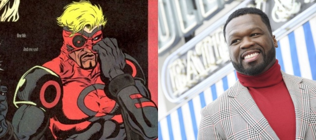

Spider-Man: No Way Home es la tercera película más taquillera en la historia de EE.UU.
Una vez más Spider-Man: No Way Home (Sin camino a casa) y su récord confirman que se trata de uno de los superhéroes más exitosos de la historia del cine. En tres meses, el film superó los 760,5 millones de dólares de Avatar, lo que la convirtió en la tercera película más taquillera de la historia de Estados Unidos. Luego de dos meses de su estreno, todavía rompe récords de taquilla.

Curtis '50 Cent' Jackson protagonizará la adaptación en acción real del cómic 'Xerø'
Vía Deadline informan que el rapero y actor Curtis "50 Cent" Jackson (' Plan de escape ') desarrollará para G-Unit Film & Television junto con Color Farm Media una película de acción real basada en el cómic de Christopher Priest, 'Xerø' . La idea es que ésta sea la primera entrega de una nueva franquicia de acción. La película seguirá a un asesino del...